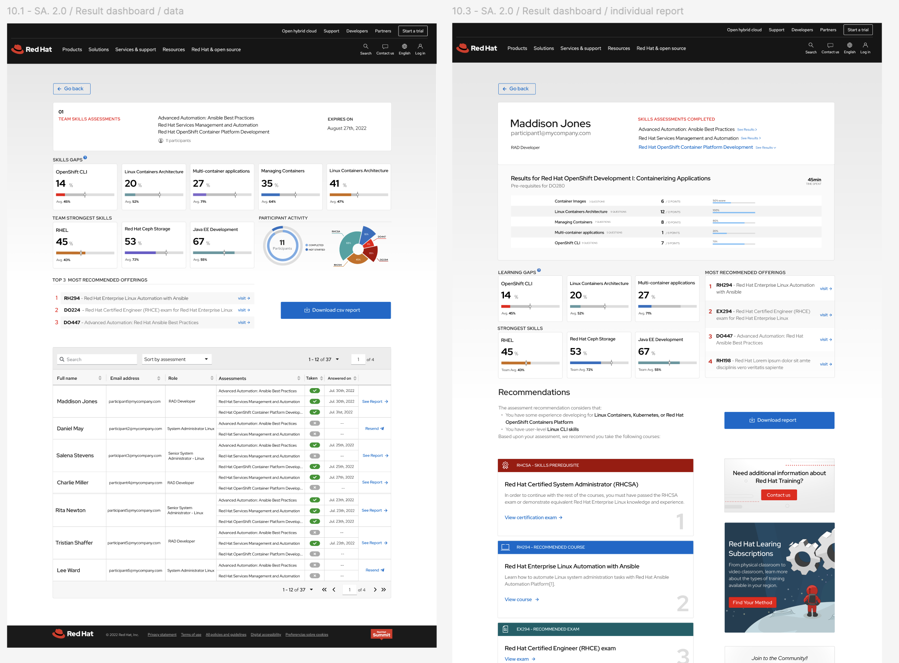

- The Solution
- 18 months
- 4 cross-functional teams
- 35 stakeholders
- 12 engineers
Skill Assessment (SA) tool assesses the client's tech team's knowledge, identifies skill gaps and encourages Red Hat technology adoption by offering custom training packages and certifications.
The architecture, codebase, user experience and visual design were built from the ground up.
The SA app was officially launched in June
2023.
Within the
first month, Red Hat learning
subscription sales
increased over 15%. Since then achieves more than 10,000
monthly visits (MAU).
My role was to lead the design of the user experience and interface. I ran cross-functional workshops with team members, conducted user interviews to ensure the user's voice was central to our design decisions and came up with a clear concept for how we would move forward with implementation.
The process involved close collaboration between four key Red Hat teams: Sales, Marketing, Curriculum, and the RHLS team (Red Hat Learning Subscriptions), which develops and maintains the learning platforms of which I was a member. I worked closely with stakeholders to gather business requirements and understand user needs and pain points. I also teamed up with a group of engineers (around 12 developers) to address technical constraints and create a design that was both practical and visually appealing.
- The process
- Discovery
UX research strategy & business requirements optimization
Using a mix of methods, like stakeholder workshops, user surveys, in-depth thinking-aloud sessions, and usability testing with focus groups. I could not only gave voice to the users allowing to provide a user-centric solution but make other stakeholder aware about how important is taking data driven design decisions.
The Curriculum team had initiated the definition of business requirements, documented on an extensive spreadsheet. My initial task during this phase involved analyzing and validating the requirements to align them with user needs. I conducted workshops with key stakeholders from Marketing, Sales and Engineering to gather insights into business goals and technical requirements. These sessions facilitated collaboration and alignment among teams.
Challenge
What do the users need?: Business requirements didn't considered user's expectations
Despite this, my analysis revealed common issues, such as the need for a centralized platform to track team assessment responses.
- Key findings
⁍ Offer an endpoint that highlights the tech team's skill gaps and also works as a sales proposition report.
⁍ Allow dynamic filtering to facilitate skill selection for creating assessments tailored to different user roles.
⁍ Provide enough flexibility to allow the same question to appear in multiple assessments.
⁍ Enable the sales team to easily access individual and group progress for qualified leads.
⁍ Provide tools for developers, like a YAML file editor and React Flow integration, to accelerate development.


- The process
- Ideation
USer persona
Utilizing insights gathered from previous phase, I created detailed user personas representing different segments of our target audience:
- Primary users Technical managers from current Red Hat enterprise customers. (e.g. Best Buy tech manager)
- Goal To ensure that assets are managed in the most cost-efficient and profitable way possible
- Needs To have a full visibility of the technical skills and knowledge levels of their teams
- Value Better use of the budget.
- Secondary users Developers and tech roles for the customer teams. (e.g. Best Buy developers)
- Goal To be productive and deliver value to the company.
- Needs Align their knowledge to the requirements needed to perform their job effectively.
- Value More technical knowledge.
- Internal red hat users Sales and marketing teams members to unlock opportunities to upsell and promote customized training courses and certification packages
- Goal Boosting sales and increase revenue.
- Needs Access to a report that helps technical managers decide that investing in learning subscriptions is a better idea than paying for unnecessary Red Hat services.
- Value Boost sales on customized training courses and certification packages.
These three personas helped us empathize with users, understand their motivations, goals and pain points, guiding the design decisions. This led me to conceptualize three different user journeys tailored to meet the specific needs of each persona type.
- The process
- Prototyping
USER FLOWS
The User persona definition led me to conceptualize three different user journeys tailored to meet the specific needs of each persona type.
Throughout this phase, I collaborated very closely with the technical team. These prototypes and wireframes served as valuable tools for clarifying requirements, facilitating collaboration, gathering feedback and optimising the development process.
Discovery
We realized the importance of the internal user flow.
building a SaaS B2C solution, we initially underestimated the potential and impact of the internal user flow. During this phase it became clear that optimizing this aspect could have an direct impact into the sales team performance.


- The process
- UX design - Wireframes
WIREFRAMES
During wireframing phase, my core responsibility was to outline the structure and layout of the user interface ensuring clarity in navigation on the overall user experience, considering the user journeys previously defined.
Throughout this phase, I collaborated very closely with the technical team. These prototypes and wireframes served as valuable tools for clarifying requirements, facilitating collaboration, gathering feedback and optimising the development process.

- The process
- UI design
Design system
At this critical stage, I meticulously incorporated Red Hat's design principles, visual elements and brand aesthetics into the user interface, aiming to maintain a cohesive and recognizable brand identity.
I crafted intuitive and visually appealing UI components that not only aligned with Red Hat's design standards but also inspired a sense of trust and familiarity among users, reinforcing the Red Hat brand in every interaction.


- The process
- UI design
HIGH FIDELITY screens
I meticulously crafted detailed high-fidelity mockups in Figma that served as a visual guide, providing the development team with a clear blueprint for the implementation phase. My attention to detail played a vital role in bringing the SA app's user interface to life, ensuring a visually compelling and user-friendly end product.
Landing page

Key Finding Applied
Allow dynamic filtering to facilitate skill selection for creating assessments tailored to different user roles.
Flow 2 - Primary user - Technical Managers reports
Key Finding Applied
Offer an endpoint that highlights the tech team's skill gaps and also works as a sales proposition report.
Red Hat Internal User flow - Sales, Developers Marketing and Curriculum teams

Key Finding Applied
Provide enough flexibility to allow the same question to appear in multiple assessments.

Key Finding Applied
Implement tools for developers, like a YAML file editor and React Flow integration, to accelerate development.
- The process
- Testing
Testing & validating
Prior to implementation, I conducted usability testing sessions with two focus users groups. By observing participants' interactions with prototypes and collecting feedback through structured tasks and open-ended questions, I identified a couple of usability concers like complex iteraction while filtering user's interests for the assessment . Iteratively I refined the design based on user feedback.
I was very intrigued to see that the pain points and features previously definend were solved in the prototype. It was interesting to see how the collaboration between the engineering and design tem lead to an app that not only meets technical standards but also delivers an optimised user experience. Visit SA live →